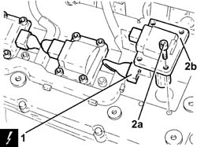

5510C18 right hand cylinder head ignition coil - r+r
- Path
- Procedures > 55 ELECTRICAL EQUIPMENT > 5510 ENGINE IGNITION > 5510C coil, ecu, sensors > 5510C18 right hand cylinder head ignition coil - r+r
- Kind
- repair procedure (removal / refitting; the operation number is the code)
- Applies to
- engines: 3.2 V6; all production periods
- Interactive page
- https://sloeber94.github.io/elrnDB-a147/en/#/3025502
Applies to: engines: 3.2 V6; all production periods
 Removing
Removing
 Refitting
RefittingEnsure that the ignition key is in the OFF position, then disconnect the negative battery terminal (-).
 | Name | Connector |
|---|---|---|
- | Battery |
Proceed with removal 1072B50 sleeves connecting air capacity box to inlet manifold is - r+r .
1. Disconnect the electrical connections from the right cylinder head ignition coils.
| Name | Connector |
|---|---|---|
1 | Ignition coil |
2. Undo the bolts (2a) and remove the ignition coils (2b) from the right cylinder head.

Applies to: engines: 3.2 V6; all production periods
Refitting
RemovingPlace the ignition coils back in their housings on the right cylinder head and secure them by tightening the bolts to the recommended torque.
 | Fastening | Component | Ø | Value (daNm) |
|---|---|---|---|---|
- | Bolt | IGNITION COIL/REEL | M6 | (Tappet cover side) 0.8 ÷ 1.0 |
Connect the electrical connections to the right cylinder head ignition coils.
Proceed with refitting 1072B50 sleeves connecting air capacity box to inlet manifold is - r+r .
Connect the negative (-) battery terminal.
Topics linked from this page (3)
- 1072B50 sleeves connecting air capacity box to inlet manifold is - r+r
- A1B Battery ( Connectors )
- A30 Ignition coil (cyl. 1)
Topics that link to this page (22)
- 1008C14 engine link bracket - r r
- 1016A34 right-hand cam cover - r + r and replace gasket
- 1016A36 left hand and right hand cam cover - r+r
- 1016D20 left cylinder head - r + r and replace gasket
- 1016D24 right cylinder head - r + r and replace gasket
- 1020D12 front crank shaft oil seal cover - r + r and replace seals
- 1020D18 front crank shaft cover oil seal - replace
- 1032B10 toothed timing belt - r + r for timing adjustment or replacement
- 1032B46 toothed drive pulley - r + r
- 1032B54 toothed driven pulley left-hand head - r + r
- 1032B58 toothed driven pulley right-hand head - r + r
- 1032C18 mobile timing system tensioner - r + r for 24 valve engines
- 1032C32 fixed timing system tensioner (one) r + r
- 1036E10 camshafts in lh cylinder head - r r on vehicle
- 1036E14 camshafts in rh cylinder head - r r on vehicle
- 1036E18 camshafts in lh and rh cylinder head - r r on vehicle
- 1036E50 front oil seals of l/h or r/h overhead camshaft - replace
- 1036E54 front oil seals of l/h overhead camshaft - replace
- 1036E58 front oil seal of r/h overhead camshafts - replace
- 1084B23 oil pump control return - r r
- 1088C10 water pump - r + r
- 5510D10 spark plugs - r+r